In [3]:
import pandas as pd
import numpy as np
import matplotlib.pyplot as plt
import seaborn as sns
import matplotlib.patches as mpatches
In [4]:
dating = pd.read_csv('http://knuth.luther.edu/~mestca01/Speed_Dating_Data.csv')
In [5]:
print('Total number of people that participated, assuming person does not appear in more than one wave: {}'.format(len(dating['iid'].unique())))
print('Total number of dates occurred: {}'.format(len(dating.index)))
Total number of people that participated, assuming person does not appear in more than one wave: 551
Total number of dates occurred: 8378
In [6]:
# out of curiosity, I want to see how many speed daters found a match!
pd.crosstab(index=dating['match'],columns="count")
Out[6]:
| col_0 | count |
|---|---|
| match | |
| 0 | 6998 |
| 1 | 1380 |
In [7]:
(1380/6998)*100
Out[7]:
19.719919977136325
In [8]:
# narrowing dataset
dating_1 = dating.iloc[:, 11:28]
dating_2 = dating.iloc[:, 30:35]
dating_3 = dating.iloc[:, 39:43]
dating_4 = dating.iloc[:, 45:67]
dating_5 = dating.iloc[:, 69:74]
dating_6 = dating.iloc[:, 87:91]
dating_7 = dating.iloc[:, 97:102]
dating_8 = dating.iloc[:, 104:107]
date = pd.concat([dating.iloc[:, 0],dating.iloc[:, 2],dating_1,dating_2,dating_3,dating_4,dating_5, dating_6,dating_7,dating_8], axis=1)
In [9]:
date2 = date.dropna()
In [10]:
date3 = date2.drop(['field', 'from', 'career'], axis=1)
In [11]:
interests = dating.iloc[:, 50:67]
interests.head()
Out[11]:
| sports | tvsports | exercise | dining | museums | art | hiking | gaming | clubbing | reading | tv | theater | movies | concerts | music | shopping | yoga | |
|---|---|---|---|---|---|---|---|---|---|---|---|---|---|---|---|---|---|
| 0 | 9.0 | 2.0 | 8.0 | 9.0 | 1.0 | 1.0 | 5.0 | 1.0 | 5.0 | 6.0 | 9.0 | 1.0 | 10.0 | 10.0 | 9.0 | 8.0 | 1.0 |
| 1 | 9.0 | 2.0 | 8.0 | 9.0 | 1.0 | 1.0 | 5.0 | 1.0 | 5.0 | 6.0 | 9.0 | 1.0 | 10.0 | 10.0 | 9.0 | 8.0 | 1.0 |
| 2 | 9.0 | 2.0 | 8.0 | 9.0 | 1.0 | 1.0 | 5.0 | 1.0 | 5.0 | 6.0 | 9.0 | 1.0 | 10.0 | 10.0 | 9.0 | 8.0 | 1.0 |
| 3 | 9.0 | 2.0 | 8.0 | 9.0 | 1.0 | 1.0 | 5.0 | 1.0 | 5.0 | 6.0 | 9.0 | 1.0 | 10.0 | 10.0 | 9.0 | 8.0 | 1.0 |
| 4 | 9.0 | 2.0 | 8.0 | 9.0 | 1.0 | 1.0 | 5.0 | 1.0 | 5.0 | 6.0 | 9.0 | 1.0 | 10.0 | 10.0 | 9.0 | 8.0 | 1.0 |
In [12]:
# heatmap
plt.subplots(figsize=(20,15))
ax = plt.axes()
ax.set_title("Correlation Heatmap of Participants Interests in Various Activities", fontsize=20, fontweight='bold')
corr = interests.corr()
sns.heatmap(corr,
xticklabels=corr.columns.values,
yticklabels=corr.columns.values)
Out[12]:
<matplotlib.axes._subplots.AxesSubplot at 0x7f96ef3a7048>
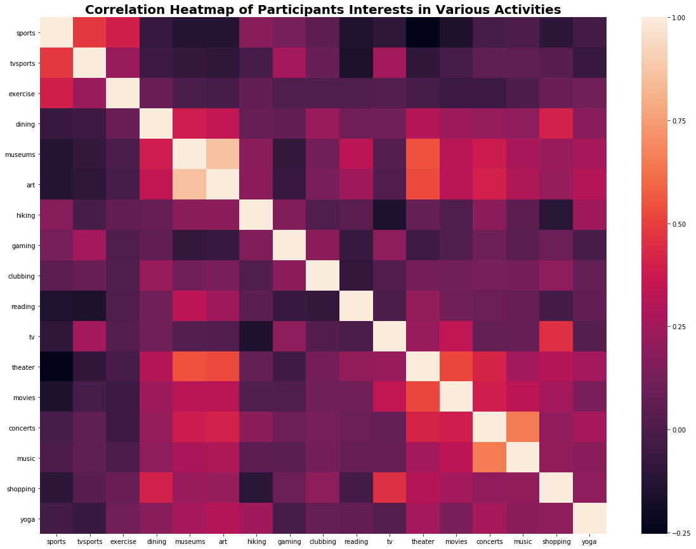
In [13]:
plt.figure(figsize=(13,6))
plt.title('How Important Is It (on a scale of 1-10) That A Person You Date Be Of The Same Racial/Ethnic Background?', fontsize=18, fontweight='bold')
sns.countplot(dating['imprace'])
plt.xlabel('Importance', fontweight='bold')
plt.ylabel('Frequency', fontweight='bold')
# get rid of "0" column
Out[13]:
Text(0,0.5,'Frequency')
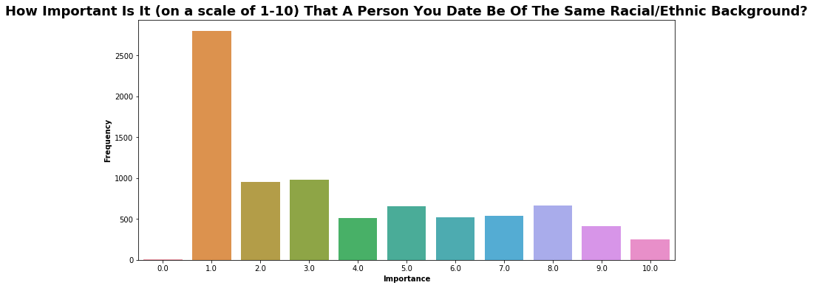
In [14]:
plt.figure(figsize=(13,6))
plt.title('How Important Is It (on a scale of 1-10) That A Person You Date Be Of The Same Religious Background?', fontsize=18, fontweight='bold')
sns.countplot(dating['imprelig'])
plt.xlabel('Importance', fontweight='bold')
plt.ylabel('Frequency', fontweight='bold')
Out[14]:
Text(0,0.5,'Frequency')
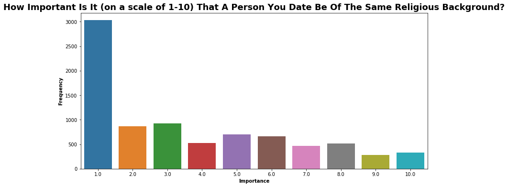
In [15]:
# looking at dec_o by gender
#It looks like women received about 1750 'no' and about 1600 'yes' for the decision question "Would you like to see him or her again?". Men received about 2050 'no' and about 1300 'yes'. In other words, men are more likely to be rejected by women than women are to be rejected by men (wahwah).
sns.set(style="ticks", color_codes=True)
g = sns.FacetGrid(dating, col="gender")
g = g.map(plt.hist, "dec_o")
plt.ticklabel_format(useOffset=False, style='plain')
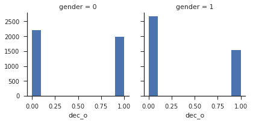
In [16]:
attributes_gender = dating[['gender','attr1_1', 'sinc1_1','intel1_1','fun1_1','amb1_1','shar1_1']].groupby('gender').mean()
cols = ['Attractive','Sincere','Intelligent','Fun','Ambition','Shared Interests']
attributes_gender.columns = cols
attributes_gender
Out[16]:
| Attractive | Sincere | Intelligent | Fun | Ambition | Shared Interests | |
|---|---|---|---|---|---|---|
| gender | ||||||
| 0 | 18.055224 | 18.305008 | 21.002502 | 17.147292 | 12.827222 | 12.704194 |
| 1 | 26.921689 | 16.498436 | 19.537374 | 17.763893 | 8.552829 | 10.996574 |
In [17]:
attributes_gender.T.plot(kind='bar', width=0.8, figsize=(10,10), color=['pink', 'darkblue'])
plt.xticks(rotation=35)
plt.xlabel('Attributes', size=14, fontweight="bold")
plt.ylabel('Average Score', size = 14, fontweight="bold")
plt.title("What People Are Looking For in the Opposite Sex", size = 16, fontweight="bold")
female = mpatches.Patch(color='pink', label='Female')
male = mpatches.Patch(color='darkblue', label='Male')
plt.legend(handles=[female, male])
Out[17]:
<matplotlib.legend.Legend at 0x7f96ee6fe7f0>
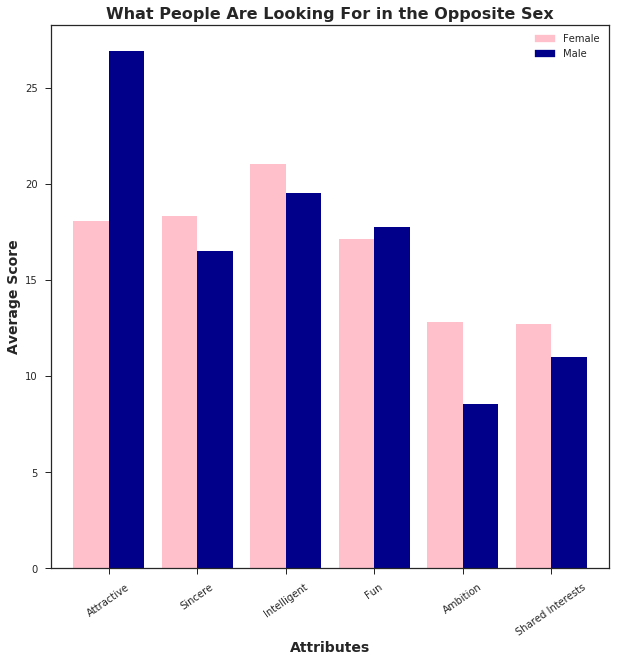
In [18]:
# Men's are mostly looking for attractive woman, while women are looking for a well rounded man
#We can see that there is a great difference between what male and female participants are looking for.
#For male participants, the attractiveness of the female is given a lot more weight, and the ambitiousness or if they have any shared interset are ranked not as high.
#For females, the points are more evenly distributed across all of the attributes, with intelligence ranked slightly higher compared to others.
#Men are looking for attractive women, and are less concerned with a woman’s abmition and shared interests. On the other hand, women are looking for a well-rounded male and value intelligence in a man.
# Now let's take a look on 'What do you think the opposite sex looks for on a date?'
attributes_gender_2 = dating[['gender','attr2_1', 'sinc2_1','intel2_1','fun2_1','amb2_1','shar2_1']].groupby('gender').mean()
cols = ['Attractive','Sincere','Intelligent','Fun','Ambition','Shared Interests']
attributes_gender_2.columns = cols
attributes_gender_2
Out[18]:
| Attractive | Sincere | Intelligent | Fun | Ambition | Shared Interests | |
|---|---|---|---|---|---|---|
| gender | ||||||
| 0 | 35.694349 | 11.343646 | 12.532022 | 18.733510 | 9.230638 | 12.645113 |
| 1 | 25.092631 | 15.181078 | 16.279633 | 18.115379 | 14.234815 | 11.071924 |
In [19]:
#Women strongly feel that men are most concerned with a woman’s attractiveness and that other attributes are not as important, especially ambitiousness.
#Comparing female and male answers in the first graph, we can see that there are not that much difference between the two. We can say that women almost accurately predicted what men are looking for in their partners (i.e. attractiveness).
#Additionally, men’s predictions were not far off either. By comparing males’ responses here and female’s responses in the first graph, what men think women are looking for also closely resembles what women say they are looking for. The main differences, though, are a higher attractiveness score and a lower shared interest score.
#Both men and women can predict what the opposite sex are looking for in their partners to a certain degree.
attributes_gender_2.T.plot(kind='bar', width=0.8, figsize=(10,10), color=['pink', 'darkblue'])
plt.xticks(rotation=35)
plt.xlabel('Attributes', size=14, fontweight="bold")
plt.ylabel('Average Score', size = 14, fontweight="bold")
plt.title("What People Think the Opposite Sex is Looking For", size = 16, fontweight="bold")
female = mpatches.Patch(color='pink', label='Female')
male = mpatches.Patch(color='darkblue', label='Male')
plt.legend(handles=[female, male])
Out[19]:
<matplotlib.legend.Legend at 0x7f96ee70ac50>
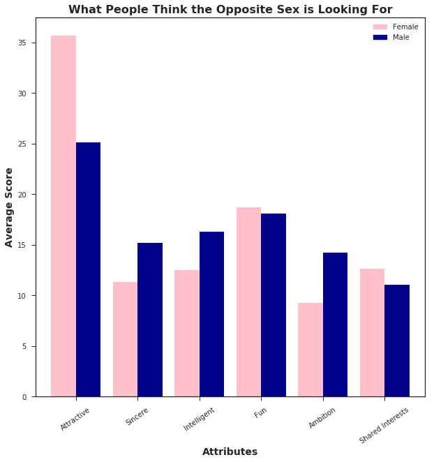
In [30]:
plt.figure(figsize=(13,6))
plt.title('You Call', fontsize=18)
sns.countplot(dating['you_call'])
Out[30]:
<matplotlib.axes._subplots.AxesSubplot at 0x7f2464856d30>
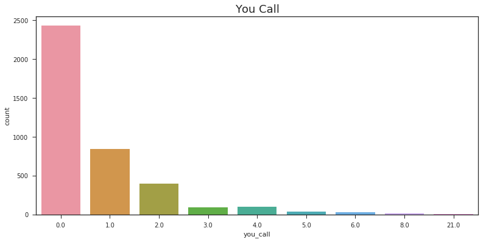
In [31]:
plt.figure(figsize=(13,6))
plt.title('Them Call', fontsize=18)
sns.countplot(dating['them_cal'])
Out[31]:
<matplotlib.axes._subplots.AxesSubplot at 0x7f246484cf28>
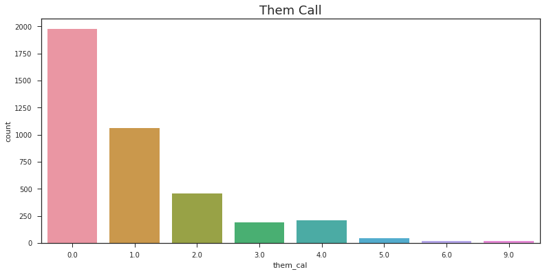
In [32]:
follow_up = dating.iloc[:, 156:159]
follow_up.head()
Out[32]:
| you_call | them_cal | date_3 | |
|---|---|---|---|
| 0 | 1.0 | 1.0 | 0.0 |
| 1 | 1.0 | 1.0 | 0.0 |
| 2 | 1.0 | 1.0 | 0.0 |
| 3 | 1.0 | 1.0 | 0.0 |
| 4 | 1.0 | 1.0 | 0.0 |
In [21]:
plt.figure(figsize=(13,6))
plt.title('Have You Been on a Date with a Match?', fontsize=18)
sns.countplot(dating['date_3'])
Out[21]:
<matplotlib.axes._subplots.AxesSubplot at 0x7f96ee75e550>
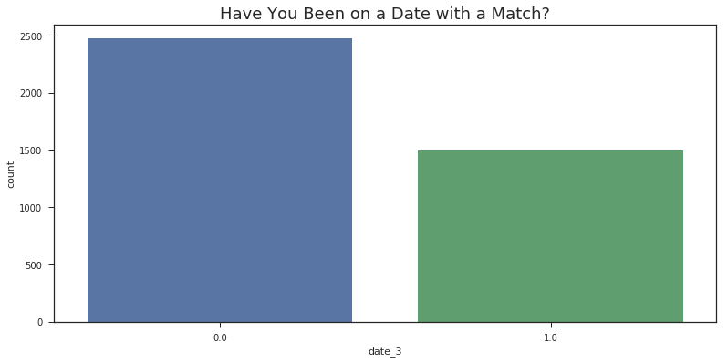
In [22]:
plt.figure(figsize=(13,6))
plt.title('How Many Matches Have You Been on a Date With?', fontsize=18)
sns.countplot(dating['numdat_3'])
Out[22]:
<matplotlib.axes._subplots.AxesSubplot at 0x7f96ee736a90>
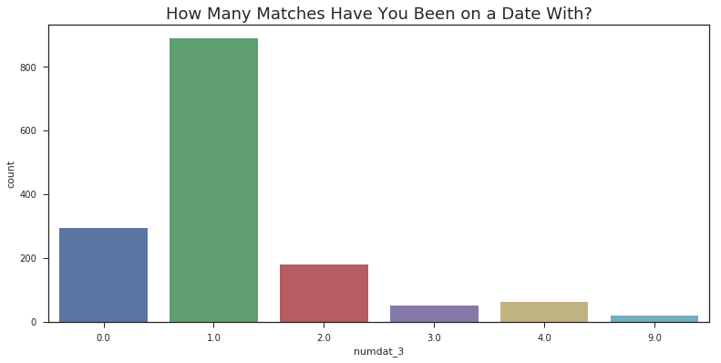
In [60]:
#So it seems 26% of participants unfortunately had their heart broken. More than the percentage of people who got a second date!
no_love_count = len(date3[(date3['dec_o']==0) & (date3['dec']==1)])
+ len(date3[(date3['dec_o']==1) & (date3['dec']==0)])
perc_broken_heart = no_love_count / len(date3.index)
perc_broken_heart*100
Out[60]:
26.040900397234072
In [61]:
#On an unrelated note, I wonder if the incidence of unrequited love differs by the attractiveness of the partner.
#encoding unrequited love as a new column (url) where decision of partner is no but decision of participant is yes, or where decision of partner is yes but decision of participant is no
date3['url']=np.where(((date3['dec_o']==0) & (date3['dec']==1))|((date3['dec']==0) & (date3['dec_o']==1)),1,0)
#when true/someone's heart is broken, url value is 1. when false/heart is no broken/both like each other, url value is 0
In [71]:
# looking at url by attractiveness
plt.subplot(1,3,1)
plt.figure(figsize=(7,9))
sns.boxplot(x='url', y='attr', data=date3, palette='Blues')
plt.title('Broken Hearts by Attractiveness of Partner', fontsize=20)
plt.xlabel('Broken Heart', fontsize=16)
#Looks like the difference in attractiveness was not statistically significant. So the good news is, the likelihood of getting rejected is not dependent on your attractiveness!
#subplot1
plt.subplot(1,3,2)
sns.boxplot(x='url', y='attr', data=date3, palette='Blues')
plt.title('Broken Hearts by Sincerity of Partner', fontsize=20)
plt.xlabel('Broken Heart', fontsize=16)
plt.show()
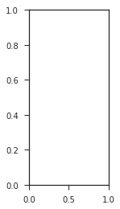
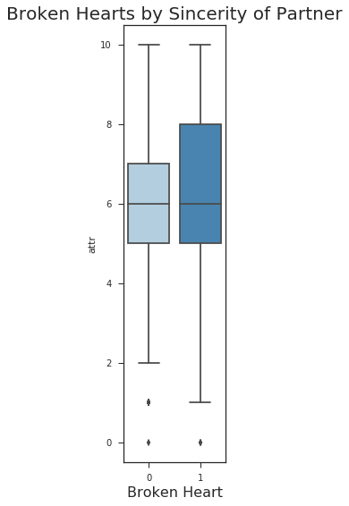
In [65]:
plt.figure(figsize=(7,9))
sns.boxplot(x='url', y='sinc', data=date3, palette='Blues')
plt.title('Broken Hearts by Sincerity of Partner', fontsize=20)
plt.xlabel('Broken Heart', fontsize=16)
Out[65]:
Text(0.5,0,'Broken Heart')
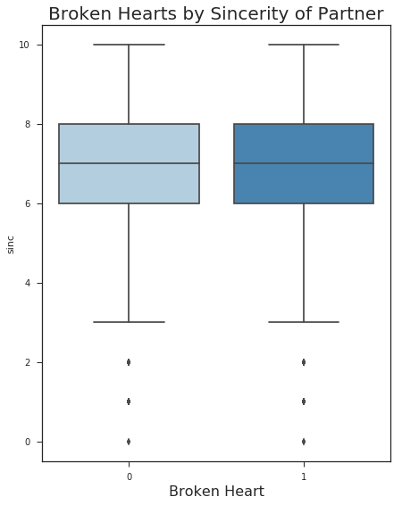
In [ ]:
plt.figure(figsize=(7,9))
sns.boxplot(x='url', y='attr', data=date3, palette='Blues')
plt.title('Broken Hearts by Attractiveness of Partner', fontsize=20)
plt.xlabel('Broken Heart', fontsize=16)